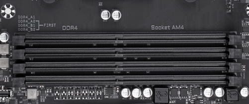

|  | A memory bank is a logical unit of storage in electronics, which is hardware-dependent. In a computer, the memory bank may be determined by the memory controller along with physical organization of the hardware memory slots. In a typical synchronous dynamic random-access memory (SDRAM) or double data rate SDRAM (DDR SDRAM), a bank consists of multiple rows and columns of storage units, and is usually spread out across several chips. In a single read or write operation, only one bank is accessed, therefore the number of bits in a column or a row, per bank and per chip, equals the memory bus width in bits (single channel). The size of a bank is further determined by the number of bits in a column and a row, per chip, multiplied by the number of chips in a bank. |
Some computers have several identical memory banks of RAM, and use bank switching to switch between them. Harvard architecture computers have (at least) two very different banks of memory, one for program storage and other for data storage.A memory bank is a part of cache memory that is addressed consecutively in the total set of memory banks, i.e., when data item a(n) is stored in bank b, data item a(n + 1) is stored in bank b + 1. Cache memory is divided in banks to evade the effects of the bank cycle time (see above) [=> missing "bank cycle" definition, above]. When data is stored or retrieved consecutively each bank has enough time to recover before the next request for that bank arrives.The number of memory modules needed to have the same number of data bits as the bus. A bank can consist of one or more memory modules. |
|